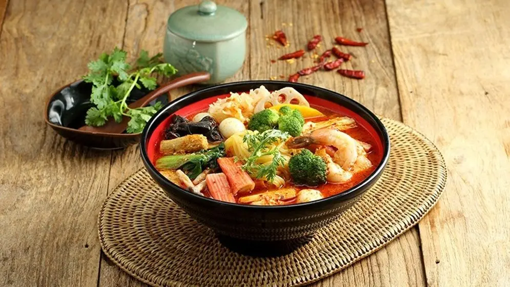

팽이버섯, 느타리버섯은 잘 씻어 밑동을 자르고 표고버섯은 1cm 두께로 슬라이스 해주세요.
팽이버섯, 느타리버섯은 잘 씻어 밑동을 자르고 표고버섯은 1cm 두께로 슬라이스 해주세요.
감자는 껍질을 벗기고 1cm 두께로 슬라이스한 뒤 2등분 하고 청경채는 잘 씻어서 다듬어주세요.
오징어는 1.5cm 두께로 썰고 새우는 머리와 꼬리를 제거하고 껍질을 벗겨주세요.
 냄비에 물, 사골국물을 넣고 납작당면을 넣어 5분 정도 끓여주세요.
냄비에 물, 사골국물을 넣고 납작당면을 넣어 5분 정도 끓여주세요.
순서 4의 냄비에 마라소스를 넣고 1분 정도 더 끓여주세요.
 팽이버섯, 느타리버섯, 표고버섯, 감자, 청경채를 넣고 3분 정도 끓여주세요.
팽이버섯, 느타리버섯, 표고버섯, 감자, 청경채를 넣고 3분 정도 끓여주세요.
땅콩버터, 마늘을 넣고 2분 정도 더 끓여주세요.
 갖가지 재료와 얼얼한 매운맛을 음미하며 맛있게 즐기세요.